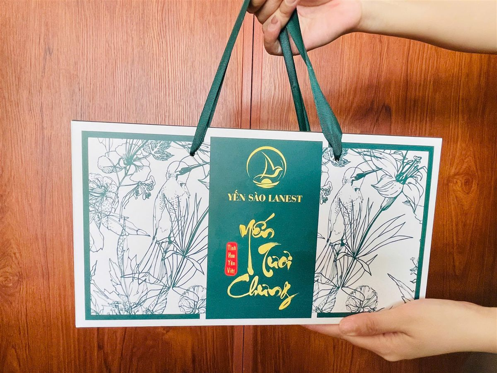
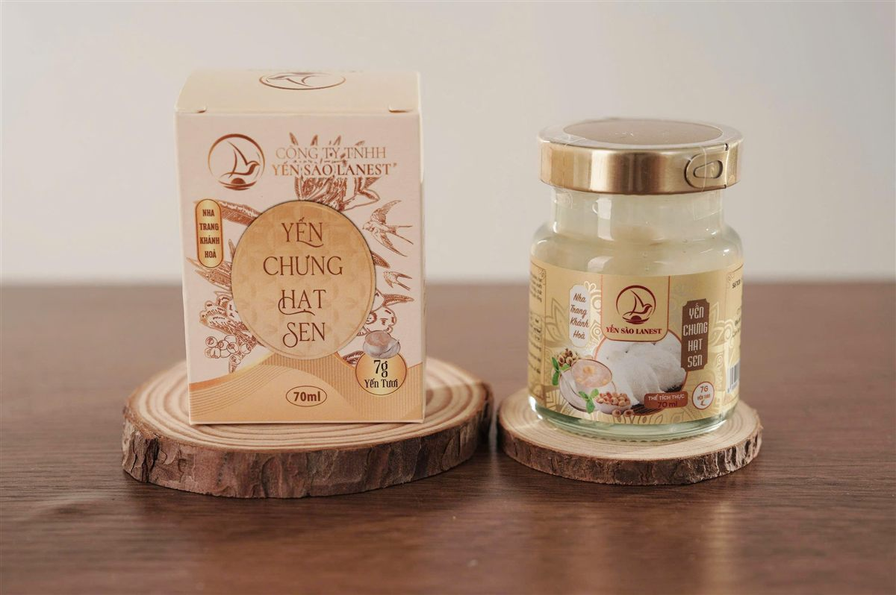

Quà 20/11 Tặng Thầy Cô: Vì Sao Yến Sào Là Món Quà Sức Khỏe Tinh Tế, Chọn Loại Nào
Yến Sào Lanest · Đăng ngày 07/11/2026

Mỗi năm tới tháng 11, phụ huynh và học trò lại đứng trước cùng một câu hỏi: tặng gì cho thầy cô để vừa nói được lời cảm ơn, vừa không phô trương. Chọn quà 20/11 tặng thầy cô là yến sào là chọn một lời chúc rất giản dị: mong thầy cô khỏe. Bài này giải thích vì sao yến hợp làm quà tri ân, và gợi ý chọn loại nào theo từng cách tặng.
Túi quà xanh trắng "Yến Tươi Chưng" của Lanest, trao bằng hai tay
1. Quà 20/11 khó ở chỗ nào?
Quà cho thầy cô khác quà biếu sếp hay đối tác. Người tặng thường là phụ huynh, là cả lớp góp chung, hoặc là học trò cũ quay về thăm. Món quà cần đủ trang trọng để thể hiện lòng biết ơn, nhưng không nên quá đắt đỏ khiến người nhận ngại. Nó cũng nên là thứ thầy cô dùng được thật trong nhà, thay vì để trong tủ.
Ba câu hỏi nên trả lời trước khi chọn quà:
- Ai tặng: một gia đình, cả lớp, hay ban phụ huynh tặng nhiều thầy cô trong trường?
- Thầy cô dùng thế nào: thích món dùng ngay, hay quen tự nấu?
- Thầy cô có cần kiêng gì không, ví dụ hạn chế đường?
2. Vì sao yến sào là món quà tri ân tinh tế?
Trong trang cẩm nang tổng quan của Lanest, "người tìm quà tặng sức khỏe" là một trong những nhóm nên dùng yến, và quà tặng yến được xếp riêng thành một loại dành cho quà tặng cá nhân. Một hộp yến không ồn ào, nhưng ai nhận cũng hiểu ý người tặng: mong mình giữ sức khỏe để còn đứng lớp lâu dài.
Với Lanest, câu "Trao sức khỏe – Trao yêu thương" cũng gắn với chữ "thầy". Người sáng lập Lanest kể về những điều mình mang theo từ ba mẹ và người thầy:
"cái câu nói và bài học từ ba mẹ, người thầy và người mà mình rất là tâm đắc trong cái quá trình mình đi học đó là là giữ uy tín hơn giữ mạng là chịu trách nhề 100% nào, phá bỏ niềm tin giới hạn và mình phải tin tưởng là mình phải làm được"
Ngày 20/11 là dịp để mỗi người nhớ lại một bài học như vậy, và một hộp quà sức khỏe là cách nói cảm ơn mà không cần nhiều lời.
3. Chọn quà theo cách tặng
Dưới đây là gợi ý dựa trên những quy cách Lanest đang có. Giá tùy mẫu hộp, số hũ và số lượng, anh chị gọi hotline để được báo cụ thể.
| Cách tặng | Gợi ý | Vì sao hợp |
| Một gia đình tặng thầy cô chủ nhiệm | Hộp quà xanh hoặc hộp quà đỏ 6 hũ yến chưng 7g yến tươi | Gọn, có quai xách, đủ dùng trong một tuần, phối được nhiều vị |
| Cả lớp góp chung | Hộp quà đỏ dòng nguyên chất 100%, hoặc yến tinh chế hộp 50g, 100g | Trang trọng hơn; mỗi hũ nguyên chất có 1,5g tổ yến, tương đương 15g yến tươi |
| Ban phụ huynh tặng nhiều thầy cô | Mỗi thầy cô một hũ yến chưng trong hộp nhỏ riêng, hoặc hộp 6 hũ | Ai cũng có phần, dễ chia theo số người |
| Học trò cũ về thăm thầy cô | Hộp 6 hoặc 10 hũ phối nhiều vị | Thầy cô đổi vị trong tuần, cả nhà cùng dùng được |
Lanest thường xuyên làm mới mẫu hộp, nên mẫu thực tế mỗi mùa có thể khác ảnh. Anh chị nhắn trước để xem mẫu đang có. So sánh kỹ hơn hai dòng hũ có trong bài yến hũ nguyên chất và yến hũ 7g.

Một hũ yến chưng hạt sen trong hộp nhỏ riêng, hợp khi muốn tặng mỗi thầy cô một phần
4. Chọn vị theo thầy cô
Dòng yến chưng 7g yến tươi của Lanest có 14 vị. Nếu chưa biết thầy cô thích gì, vài gợi ý dễ chọn:
- Đường phèn: vị bán chạy nhất của Lanest, dễ dùng, hợp người lần đầu uống yến.
- Đông trùng hạ thảo: màu vàng cam nhẹ, mùi thơm đặc trưng, hợp người đã quen vị yến.
- Đường ăn kiêng, đông trùng hạ thảo đường ăn kiêng: cho thầy cô cần hạn chế đường. Nếu thầy cô đang điều trị bệnh, nên để thầy cô hỏi bác sĩ trước khi dùng.
- Phối nhiều vị trong một hộp: Lanest cho trộn vị trong cùng đơn, mỗi hộp một kiểu phối.
Thầy cô quen tự nấu thì yến tinh chế là lựa chọn hợp hơn: tự chưng cùng táo đỏ, hạt sen, kỷ tử theo khẩu vị nhà mình. Xem thêm bài 14 vị yến chưng, chọn vị nào.
5. Lời cảm ơn đi kèm hộp quà
Với thầy cô, phần đáng nhớ nhất của món quà nhiều khi là mấy dòng chữ đi kèm. Khi đặt quà ở Lanest, anh chị có thể hỏi thêm túi xách và thiệp chúc để tự tay viết lời gửi. Vài gợi ý cho tấm thiệp:
- Viết bằng chữ của mình, kể một kỷ niệm nhỏ của con với thầy cô.
- Ghi rõ tên học trò và lớp, nhất là khi ban phụ huynh gửi nhiều phần quà cùng lúc.
- Lời chúc ngắn, gửi tới cả sức khỏe của thầy cô và gia đình.
6. Đặt sớm và kiểm hàng trước ngày 20/11
- Đặt sớm: đơn được nhân viên xác nhận trong vòng 12 giờ làm việc, giao từ 1 đến 5 ngày tùy khu vực. Sát ngày lễ đơn dồn nhiều, nên đặt trước vài ngày để kịp trao quà.
- Kiểm hàng khi nhận: hộp, hũ nguyên vẹn, tem niêm phong còn nguyên, nhãn ghi rõ thành phần, ngày sản xuất và hạn sử dụng. Cách đọc nhãn có trong bài cách đọc nhãn yến hũ.
- Dặn thầy cô cách dùng: hũ yến chưng mở nắp dùng ngay, ngon hơn khi uống lạnh. Cách cất giữ có trong bài bảo quản yến hũ chưng sẵn.
Muốn xem thêm các set quà cho những dịp khác, anh chị đọc bài set quà biếu yến sào.
Câu hỏi thường gặp
Có in tên học trò hoặc lời chúc lên hộp quà được không?
Anh chị gọi hotline để hỏi mẫu đang có. Cách đơn giản nhất là kèm thiệp chúc và tự tay viết lời gửi thầy cô.
Thầy cô ở tỉnh khác, gửi quà được không?
Được. Lanest giao từ 1 đến 5 ngày tùy khu vực, anh chị nhớ đặt sớm để kịp ngày 20/11.
Giá các hộp quà 20/11 là bao nhiêu?
Giá phụ thuộc mẫu hộp, số hũ và số lượng đặt. Anh chị gọi 0258 6278 627 để được báo giá và xem mẫu hộp đang có.